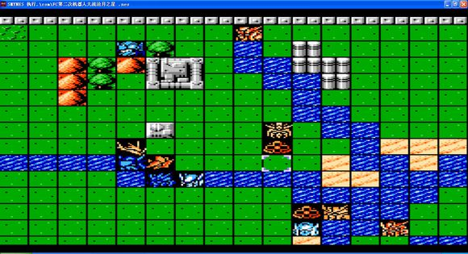
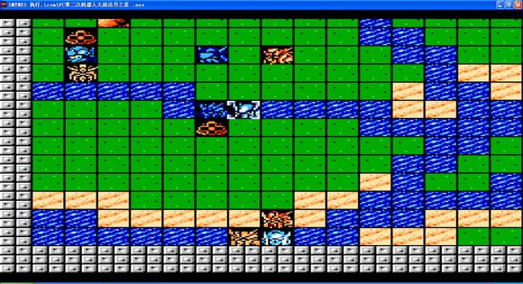
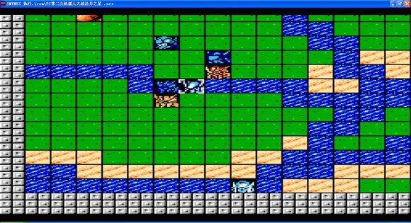
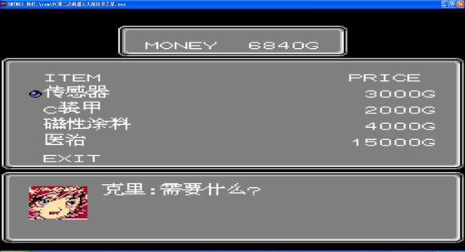

第二话 伙伴
前期艾克塞林与拉托尼不爆机就可以怎么玩都行
拉托尼剧情撤退前有个情义可以用用
支援出现后先把四架F・15打爆 向介和卡卡利进入水域 秒阿拉德 天岛与瓦修过来后用精神秒一个 3个boss出来后
用机体去分散一下 集中了谁也扛不住

龙胜尽量延这水走 可以不被攻击或者减少伤害 精神可以为自己加加血 防守回避什么的都可以用上 彩有个祈祷

小兵boss清理的差不多了之后 用艾克塞林把下面的boss引上来 最后全歼 那边有个商店有兴趣可以去看看

